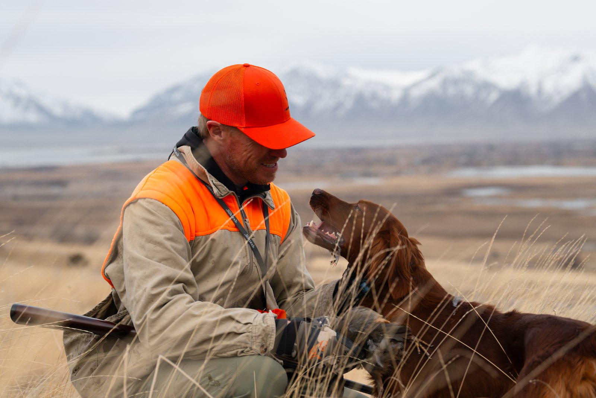
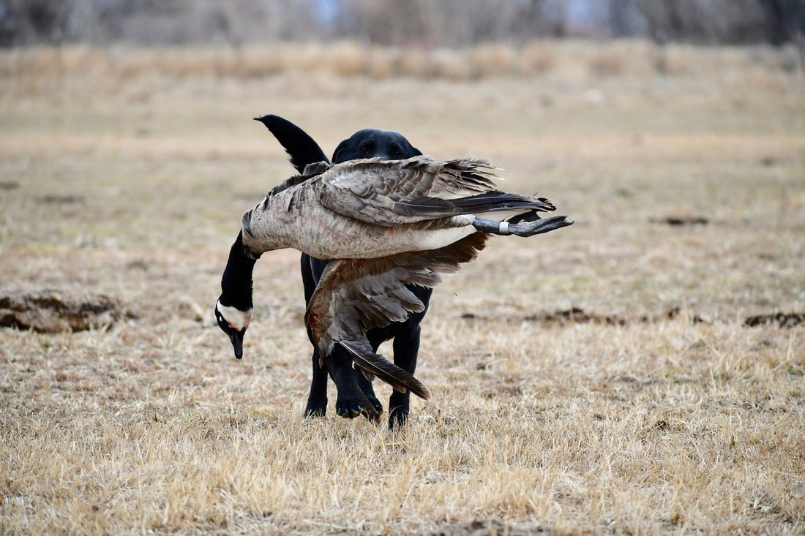
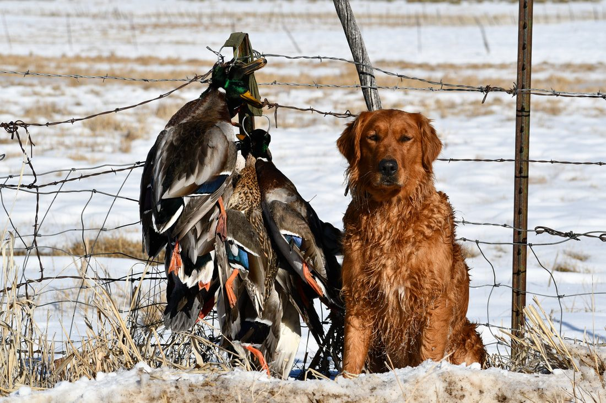
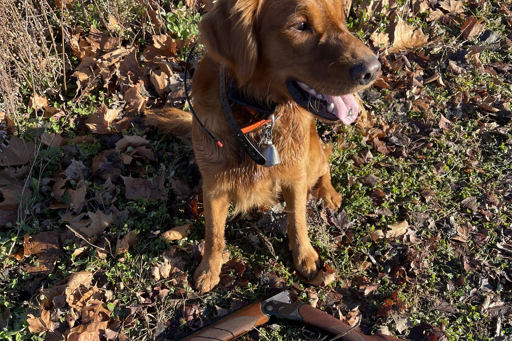

Not every gun-shy dog needs to go straight to a professional trainer.
In many cases, an owner can begin the process at home by stopping uncontrolled gunfire, creating positive experiences, and gradually working the dog around sound at a level it can handle.
But there comes a point where some dogs need more than an at-home setup can provide.
Professional help becomes especially useful when:
- The dog has severe gun issues.
- The dog keeps hitting the same threshold with live gunfire.
- The owner does not have access to birds.
- There is no safe property available for live-gun training.
- The owner does not have another person to handle the gun at a distance.
- The dog shuts down even when the process is slowed down.
- The owner is having trouble reading the dog’s demeanor.
- The dog needs help transitioning from recorded gunfire back to live field work.
A lot of the time, the issue is not that the owner is unwilling to do the work.
They simply do not have the equipment, property, birds, help, or experience needed to finish the process correctly.
Severe gun shyness is a good reason to slow down
If someone comes to me and says their dog already has severe gun-shy behavior, I do not recommend immediately taking the dog into a field and shooting around it again.
At that point, the dog may already have a strong negative association with gunfire.
The first goal is to stop reinforcing that association.
That can mean backing away from live gunfire completely for a while.
For dogs like this, I often recommend starting with Gunshy Fix at home.
The dog can work through the lessons gradually in a controlled environment before we ask it to deal with live gunfire again.
What does severe gun shyness look like?
A dog does not have to run away to have a serious gun issue.
Some obvious signs include:
- Running back to the truck.
- Trying to escape.
- Refusing to continue hunting.
- Stopping retrieves.
- Avoiding the handler after shots.
But some signs are more subtle.
A dog may:
- Stay right beside the owner.
- Stop ranging out.
- Walk behind the handler.
- Lose interest in birds.
- Become quiet.
- Slow down.
- Change its posture or energy.
- Stop acting like itself.
That change in demeanor is what matters.
If gunfire causes the dog’s normal personality and working behavior to disappear, I consider that a problem even if the dog never physically runs away.

When the dog keeps hitting the same wall
One situation where professional help can become valuable is when a dog repeatedly reaches the same threshold.
I have worked with dogs that had good bird drive and did well while the gun was farther away.
We could bring the shooter in gradually.
But once the gun reached somewhere around 30 or 40 yards, the dog’s demeanor changed.
The dog might stop retrieving.
It might lose interest in the bird.
It might come back toward the handler.
It might simply shut down.
At that point, continuing to move the gun closer usually does not solve the problem.
The dog is telling us we have reached its current limit.
That is where we may need to back up, work on desensitization again, and then return to the field with a more controlled setup.
Why field work often requires more than one person
One reason professional training can help is that proper gunfire progression often requires multiple people.
When I work a dog in the field, one person may be focused on the dog and the bird while another person is handling the gun at a distance.
That allows us to control several things at once:
- Where the dog is.
- What the dog is focused on.
- When the bird is thrown.
- When the gun is fired.
- How far away the shooter is.
- Which direction the gun is pointed.
- How the dog reacts after the shot.
Trying to handle the dog, throw a bird, shoot a gun, and watch subtle body language at the same time is difficult.
A professional setup makes it easier to control the progression.

Birds can be an important part of the process
For many hunting dogs, birds give us something very positive to build around.
If a dog has good prey drive, we may begin by getting the dog highly excited about a pigeon or another bird.
There may be no gunfire at first.
We want the dog chasing, retrieving, mouthing the bird, or showing strong interest.
Then a shooter can be positioned far enough away that the sound is barely noticeable.
As the dog stays happy and engaged, the shooter can gradually move closer over time.
For an owner without access to birds, that kind of setup can be hard to reproduce. That is another reason professional help may make sense.
- 1Positive activity
- 2Distant gunfire
- 3Watch demeanor
- 4Move closer only if the dog stays happy

Property and safe shooting space matter
Live-gun training requires enough room to create distance.
The shooter may need to begin far away.
Then that distance has to be adjusted gradually.
You also need a place where firearms can be used safely and legally.
A small backyard usually is not enough.
Neither is an area where the dog cannot work naturally.
Professional trainers often have access to training fields, birds, equipment, and controlled shooting areas that make the process safer and more effective.
What can you do at home first?
Even if you eventually plan to use a professional trainer, there is often useful work you can begin at home.
The first thing is to stop uncontrolled gunfire exposure.
Then I often recommend working through Gunshy Fix.
Start with the first lesson at an average, comfortable volume. Let the dog go about positive normal activities.
The dog might:
- Eat.
- Play.
- Retrieve.
- Relax.
- Spend time with the family.
- Move around the home normally.
What you are watching for is no negative change in demeanor.
Stay with that lesson until the dog is comfortable.
Then move to the next lesson.
If the dog’s demeanor changes, go back to the previous lesson.
Do not push forward just because you want to finish the program quickly.
Why Gunshy Fix can be a first step before professional training
One reason I created Gunshy Fix was because many owners do not have access to birds, helpers, or property.
It gives them a way to begin working on the dog’s association with gunfire at home.
For a dog with severe gun issues, that can be especially helpful.
Rather than immediately putting the dog back into a live-fire situation, the owner can start at a much lower level.
Once the dog is comfortable through the Gunshy Fix progression, we can bring it back into field work and see whether we can continue the process with birds and live gunfire.
A professional trainer can help with the transition back to live gunfire
A dog may become completely comfortable with recorded gunfire at home and still need help with live gunfire.
Those are different environments.
In the field, we can pair the sound with:
- Birds.
- Retrieving.
- Hunting.
- Movement.
- Prey drive.
Then we can control the distance of the live shot.
The dog may hear the gun from far away at first.
If the dog’s energy stays high and its demeanor does not change, we can gradually work closer.
If the dog shuts down, we back up.
That transition is where an experienced trainer can be especially valuable.
Professional help is also about reading the dog
A lot of gun-shy training comes down to recognizing small changes before the dog completely shuts down.
An inexperienced owner may think: “He didn’t run away, so he was fine.”
But I may see:
- The dog’s range becoming shorter.
- Its retrieving slowing down.
- Less interest in birds.
- A lower tail.
- Less movement.
- More focus on the shooter.
- The dog drifting back toward the handler.
Those small changes tell us we may already be moving too quickly. Experience reading those signs can help prevent another bad exposure.
When I would definitely consider professional help
I would strongly consider professional training if:
The dog is already severely gun shy
If the dog has a deeply established negative response to gunfire, the process may require more care than a simple at-home introduction.
The dog stops working when live gunfire gets closer
If you repeatedly reach a point where the dog shuts down, continuing to push through it is not the answer.
You do not have birds
Birds can create the prey drive and positive focus that help us work gunfire back into the dog’s experience.
You do not have another person to help
A proper setup often works best with one person handling the dog and bird and another handling the gun.
You do not have safe training property
You need room to begin at a significant distance and adjust that distance gradually.
You are unsure whether the dog is actually comfortable
If you cannot confidently read changes in demeanor, an experienced trainer can help you determine whether the dog is truly progressing.
The dog has stopped making progress
If you have slowed down, backed up, and used controlled desensitization but the dog continues to hit the same wall, professional help may be the next step.
What a professional trainer should not do
Professional training should not mean simply shooting around the dog until it gives up reacting.
I would be cautious of any approach that immediately exposes an already frightened dog to heavy gunfire.
The same basic rule applies whether an owner or a trainer is doing the work:
Start where the dog is comfortable and progress gradually.
The dog should remain happy and engaged.
If its demeanor changes, the process needs to slow down.
How long can professional gun-shy training take?
There is no exact timeline.
A dog with average to above-average prey drive that is worked consistently may make very good progress in about a month.
Dogs with lower drive or severe gun issues may take several months.
Some dogs may never become exactly what the owner hoped they would be.
I do not guarantee that every gun-shy dog can be completely fixed.
What I can guarantee in my own training program is that we will use the knowledge, experience, equipment, and methods available to us to give the dog the best opportunity we can.
Don’t wait for another bad experience
One mistake owners sometimes make is continuing to hunt the dog because they are hoping the problem will work itself out.
If the dog’s demeanor is already changing around gunfire, I would not keep adding more bad experiences.
The sooner you stop uncontrolled exposure and begin a gradual plan, the better position you are in to work on the problem.
That may mean starting at home.
It may mean getting help from a trainer.
For some dogs, it may mean both.
Start at home, then get help if you need it
If your dog is already gun shy, you do not necessarily need to begin with live gunfire.
Gunshy Fix was created so owners can start working on the sound in a controlled home environment.
Once the dog can remain comfortable through the progression, a professional trainer can help transition that progress to birds and live gunfire if needed.